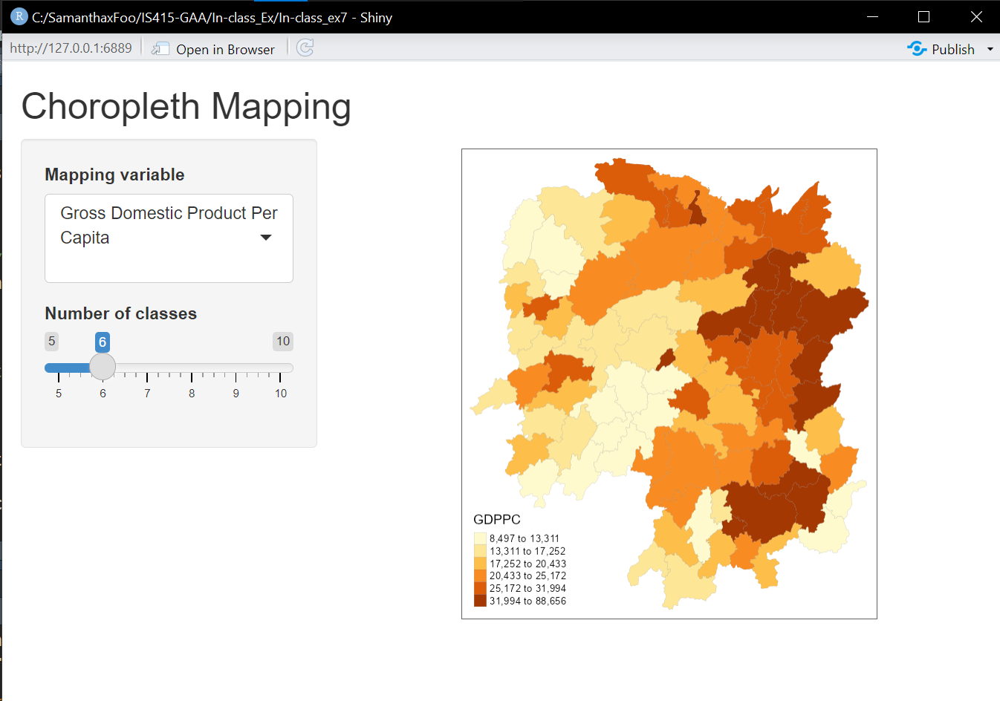
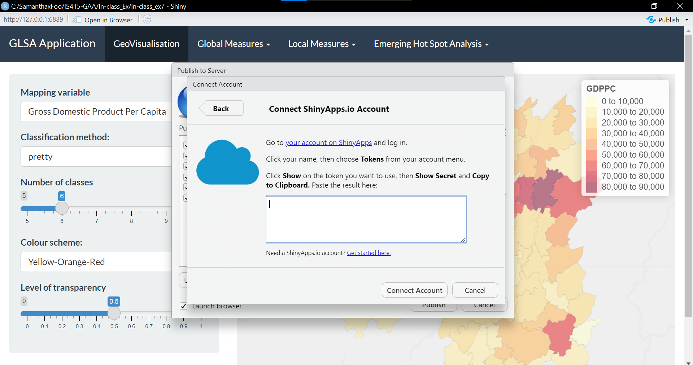

install.packages("shiny")In-class Exercise 7
Building Interacitve Shiny Applications
1. Install Package
Firstly, we install the shiny package in our R terminal. This will allow us to work with interactive packages
2. Building a Fluid Page
Next, we will start creating our first Shiny app using the Hunan 2012 dataset used in previous in-class exercises.
RStudio acts as a server here in which our shinyApp() runs the server logic function defined in server. Additionally, the shinyApp() function takes in the UI defined by the ui variable and outputs a dashboard containing a choropleth along with dropdown and slider features for the user to use.
library(shiny)
pacman::p_load(shiny, sf, tmap, bslib, tidyverse)
# Load spatial data
hunan <- st_read(dsn = "data/geospatial", layer = "Hunan")
data <- read_csv("data/aspatial/Hunan_2012.csv")
hunan_data <- left_join(hunan, data, by = c("County" = "County"))
# Define UI with default width sidebar
ui <- fluidPage(
titlePanel("Choropleth Mapping"),
sidebarLayout(
sidebarPanel(
selectInput(inputId = "variable",
label = "Mapping variable",
choices = list("Gross Domestic Product, GDP" = "GDP",
"Gross Domestic Product Per Capita" = "GDPPC",
"Gross Industry Output" = "GIO",
"Output Value of Agriculture" = "OVA",
"Output Value of Service" = "OVS"),
selected = "GDPPC"),
sliderInput(inputId = "classes",
label = "Number of classes",
min = 5,
max = 10,
value = 6)
),
mainPanel(
plotOutput("mapPlot") # Map output placeholder
)
)
)
# Define server logic function
server <- function(input, output) {
output$mapPlot <- renderPlot({
# Generate a choropleth map based on the selected input variable
tmap_options(check.and.fix = TRUE) +
tm_shape(hunan_data) +
tm_fill(col = input$variable,
n = input$classes,
style = "quantile") +
tm_borders(lwd = 0.1, alpha = 1)
})
}
# Run the application
shinyApp(ui = ui, server = server)
4. Deploying Shiny App to the Cloud
We’ll set up our ShinyApp.io account and save the token in our local device.
NOTE: rename your app3.R file to app.R. Else, RStudio will not be able to find the file
Let’s download the required rsconnect package
install.packages("rsconnect")After running the app.R file, click the ‘publish’ buttona, select ShinyApp.io and enter in the token. You can monitor website metrics on ShinyApp.io

Here is my link to the deployed app: https://samanthafoo.shinyapps.io/In-class_ex7/